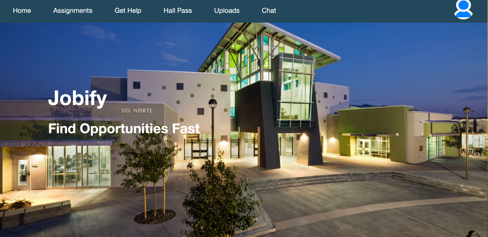
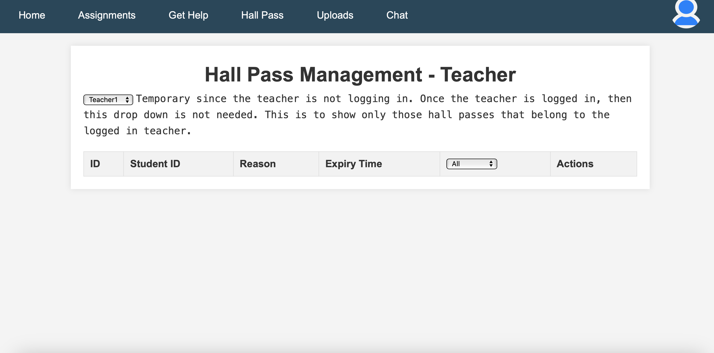

Jobify was a school-based project that I was a part of and partly led. I acted as a backend developer and code-manager for this project. In this article, I'm going to discuss primary features, what I worked on, and a general wrap-up.
We pitched Jobify as a one-stop-shop for everything related to school, whether it be related to finding internships, managing hall passes, and especially creating assignments and allowing submissions. We have multiple features, including a login, assignment creator, submission, and PAT viewer. We also use PATs in order to double validate specific users. We also allow our users to find out specific internships that we want to do. Here is an overview of our frontend:
 There is a lot more to see, but this is just the basics. Personally, I worked on the PAT development, and got to integrate PATs into the security of Jobify. Here is the view on the frontend and backend:
I also did a lot of leading, this includes leading the team in code base management, best practices in coding with good commit messages. These are the types of things that I was doing. I was often the primary leader, passing on work to various people such as Soham, Tanay and Parav.
This is the end of this project overview. Here is the github link and here is the deployed frontend.